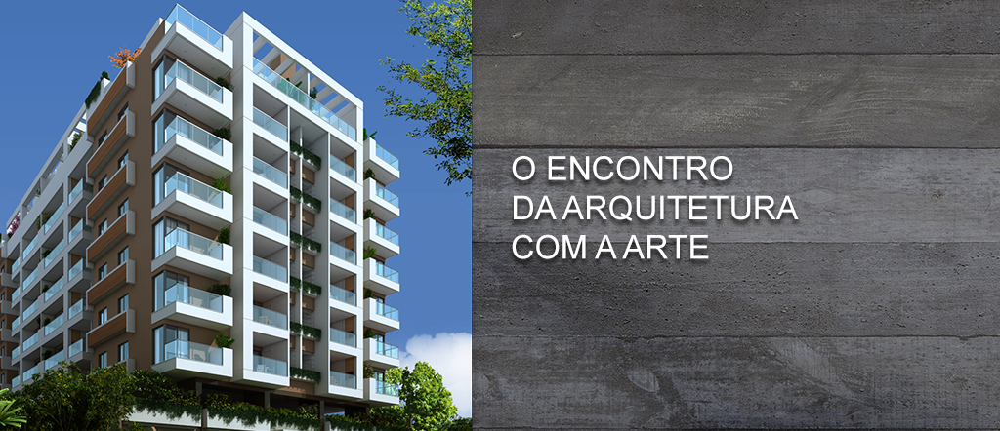
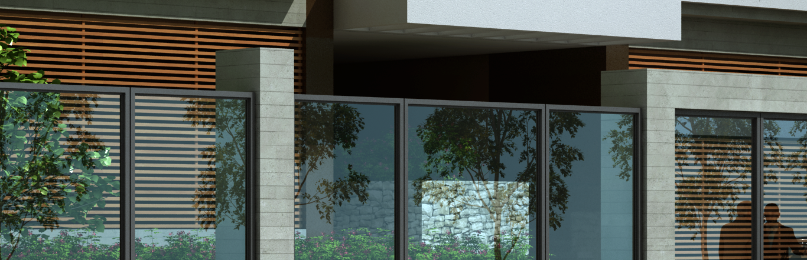

A CONSTRUTORA ALGARVE tem a honra de apresentar seu mais novo projeto. Longe de ser apenas mais um empreendimento, o Agriões Living é um conceito de morar bem. Ao longo de quase três décadas de experiência, a ALGARVE entende que o mercado imbiliário contemporâneo exige mais que apenas bons projetos e bom padrão construtivo. Para além de uma excelente localização e outros atributos importantes, o Agriões Living foi pensado com base em um conceito atual e diferenciado, que o tornará superior a qualquer outro empreendimento de seu segmento.
Atualmente as pessoas procuram identificar a compra de um imóvel com uma grande conquista, a realização de um sonho. Desejam compartilhar alegrias com a família e os amigos, ter a percepção de estarem felizes e realizadas. Seu novo lar deve ser o porto seguro que abriga todas estas emoções, experiências e, também, onde se vive alguns dos melhores momentos da vida.
Por isso e muito mais, o Agriões Living reúne qualidades que o tornam a sua melhor opção de morar bem.
Comece agora a conhecer o empreendimento que renovará seus conceitos.

Nada melhor do que acordar e ter uma mesa de café da manhã completa com pão quentinho, ovos mexidos, seu suco preferido com frutas frescas e tudo o que você mais gosta. Depois do café, deixar os filhos no colégio em frente e voltar para o fitness center, se exercitar, nadar e ficar com toda a disposição para começar o dia novinho em folha. Isto se chama PRATICIDADE.
Morar no Agriões Living significa ter acesso facilitado à conveniências que tornam o dia a dia mais prático. A localização privilegiada permite acomodidade de estar perto de tudo que você e sua família precisam. São diversas opções à sua à sua disposição: polo gastronômico, supermercados, agências bancárias, padarias, drogarias, lojas e muito mais.